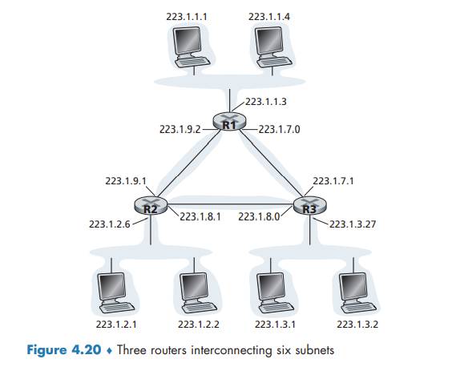
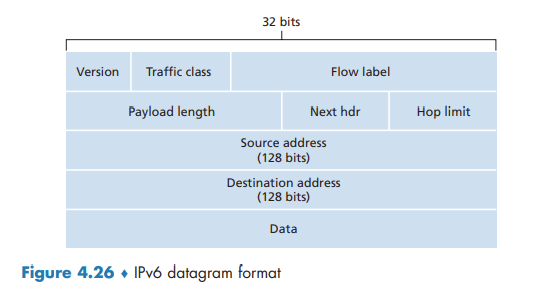

The Network Layer: Date Plane
This contents of this chapter is part of the curriculum for TTM4100, except for the sections 4.4 and 4.5.
Overview of Network Layer
Forwarding and Routing: The Data and Control Planes
two important network-layer functions can be identified:
- Forwarding.
- Routing.
Forwarding refers to the router-local action of transferring a packet from an input link interface to the appropriate output link interface. Routing refers to the network-wide process that determines the end-to-end paths that packets take from source to destination.
We can think of forwarding as the process of getting through a single interchange. We can think of routing as the process of planning the trip from Pennsylvania to Florida.
Forwarding table: A router forwards a packet by examining the value of one or more fields in the arriving packet’s header, and then using these header values to index into its forwarding table. The value stored in the forwarding table entry for those values indicates the outgoing link interface at that router to which that packet is to be forwarded.
Control Plane: The Traditional Approach
In this example, a routing algorithm runs in each and every router and both forwarding and routing functions are contained within a router. the routing algorithm function in one router communicates with the routing algorithm function in other routers to compute the values for its forwarding table.
Control Plane: The SDN Approach
an alternative approach in which a physically separate, remote controller computes and distributes the forwarding tables to be used by each and every router.
Software-defined networking (SDN), where the network is “software-defined” because the controller that computes forwarding tables and interacts with routers is implemented in software.
Network Service Model
The network service model defines the characteristics of end-to-end delivery of packets between sending and receiving hosts. These services could include:
- Guaranteed delivery.
- Guaranteed delivery with bounded delay.
- In-order packet delivery
- Guaranteed minimal bandwidth.
- Security.
The Internet’s network layer provides a single service, known as best-effort service.
An Overview of Chapter 4
Some packet switches, called link-layer switches, base their forwarding decision on values in the fields of the link-layer frame; switches are thus referred to as link-layer (layer 2) devices. Other packet switches, called routers, base their forwarding decision on header field values in the network-layer datagram. Routers are thus network-layer (layer 3) devices.
What’s Inside a Router?
In a high-level view of a generic router architecture, four router components can be identified:
- Input ports.
- Switching fabric.
- Output ports.
- Routing processor. performs control-plane functions.
We distinguish between
- Destination-based forwarding.
- Generalized forwarding.
Input Port Processing and Destination-Based Forwarding
With this style of forwarding table, the router matches a prefix of the packet’s destination address with the entries in the table.
When there are multiple matches, the router uses the longest prefix matching rule; that is, it finds the longest matching entry in the table and forwards the packet to the link interface associated with the longest prefix match.

Switching
Switching can be accomplished in a number of ways:
- Switching via memory.
- Switching via a bus.
- Switching via an interconnection network. A crossbar switch is non-blocking.

Output Port Processing
Output port processing takes packets that have been stored in the output port’s memory and transmits them over the output link. This includes selecting (i.e., scheduling) and de-queueing packets for transmission, and performing the needed link-layer and physical-layer transmission functions.
Where Does Queuing Occur?
The location and extent of queueing (either at the input port queues or the output port queues) will depend on the traffic load, the relative speed of the switching fabric, and the line speed.
the router’s memory can eventually be exhausted and packet loss will occur when no memory is available to store arriving packets.
Input Queueing
If the switch fabric is not fast enough to transfer all arriving packets through the fabric, packet queuing can occur at the input ports, as packets must join input port queues to wait their turn to be transferred through the switching fabric to the output port.
head-of-the-line (HOL) blocking in an input-queued switch—a queued packet in an input queue must wait for transfer through the fabric (even though its output port is free) because it is blocked by another packet at the head of the line.

Output Queueing
N more packets can possibly arrive at an output port in the time it takes to transmit just one of the N packets that had just previously been queued. Thus, packet queues can form at the output ports.
When there is not enough memory to buffer an incoming packet, a decision must be made to either drop the arriving packet (a policy known as drop-tail) or remove one or more already-queued packets to make room for the newly arrived packet.
a packet scheduler at the output port must choose one packet, among those queued, for transmission
How Much Buffering Is “Enough?”
Larger buffers decrease the router’s packet loss rate, but also mean potentially longer queueing delays (bufferbloat).

Packet Scheduling
First-in-First-Out (FIFO)
The FIFO (also known as first-come-first-served, or FCFS) scheduling discipline selects packets for link transmission in the same order in which they arrived at the output link queue.
Priority Queuing
Under priority queuing, packets arriving at the output link are classified into priority classes upon arrival at the queue.
Under a non-preemptive priority queuing discipline, the transmission of a packet is not interrupted once it has begun.
Round Robin and Weighted Fair Queuing (WFQ)
A generalized form of round robin queuing that has been widely implemented in routers is the so-called weighted fair queuing (WFQ) discipline.
WFQ differs from round robin in that each class may receive a differential amount of service in any interval of time.
The Internet Protocol (IP): IPv4, Addressing, IPv6, and More
IPv4 Datagram Format
If the TTL field reaches 0, a router must drop that datagram.
The protocol number is the glue that binds the network and transport layers together, whereas the port number is the glue that binds the transport and application layers together.
Since some datagrams may require options processing and others may not, the amount of time needed to process an IP datagram at a router can vary greatly.

IPv4 Addressing
A router thus has multiple interfaces, one for each of its links. Because every host and router is capable of sending and receiving IP datagrams, IP requires each host and router interface to have its own IP address. Thus, an IP address is technically associated with an interface, rather than with the host or router containing that interface.
IP addressing assigns an address to this subnet: 223.1.1.0/24, where the /24 (“slash-24”) notation, sometimes known as a subnet mask, indicates that the leftmost 24 bits of the 32-bit quantity define the subnet address.
To determine the subnets, detach each interface from its host or router, creating islands of isolated networks, with interfaces terminating the end points of the isolated networks. Each of these isolated networks is called a subnet.

The x most significant bits of an address of the form a.b.c.d/x constitute the network portion of the IP address, and are often referred to as the prefix (or network prefix) of the address.
These lower-order bits may (or may not) have an additional subnetting structure, such as that discussed above.
Obtaining a Block of Addresses
IP addresses are managed under the authority of the Internet Corporation for Assigned Names and Numbers (ICANN)
Obtaining a Host Address: The Dynamic Host Configuration Protocol
DHCP allows a host to obtain (be allocated) an IP address automatically.
DHCP is a client-server protocol. A client is typically a newly arriving host wanting to obtain network configuration information, including an IP address for itself. In the simplest case, each subnet will have a DHCP server. If no server is present on the subnet, a DHCP relay agent (typically a router) that knows the address of a DHCP server for that network is needed.
For a newly arriving host, the DHCP protocol is a four-step process.
- DHCP server discovery. The client broadcasts a DHCPDISCOVER message on the network subnet.
- DHCP server offer(s). The DHCP server reserves an IP address for the client and makes a lease offer by sending a DHCPOFFER message to the client.
- DHCP request. In response to the DHCP offer, the client replies with a DHCPREQUEST message, broadcast to the server, requesting the offered address.
- DHCP ACK. This packet includes the lease duration and any other configuration information that the client might have requested.
Since a new IP address is obtained from DHCP each time a node connects to a new subnet, a TCP connection to a remote application cannot be maintained as a mobile node moves between subnets.

Network Address Translation (NAT)
The NAT-enabled router does not look like a router to the outside world. Instead the NAT router behaves to the outside world as a single device with a single IP address.

The trick is to use a NAT translation table at the NAT router, and to include port numbers as well as IP addresses in the table entries.
IPv6
IPv6 Datagram Format
The most important changes introduced in IPv6 are evident in the datagram format:
- Expanded addressing capabilities.
- A streamlined 40-byte header.
- Flow labeling.

several fields appearing in the IPv4 datagram are no longer present in the IPv6 datagram:
- Fragmentation/reassembly.
- Header checksum.
- Options.
Transitioning from IPv4 to IPv6
With tunneling, the IPv6 node on the sending side of the tunnel takes the entire IPv6 datagram and puts it in the data (payload) field of an IPv4 datagram.